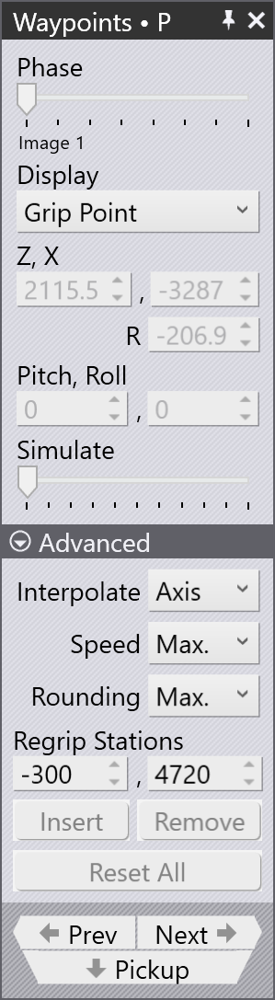

Points de passage
Aperçu
Chaque mouvement du BendMaster se compose de points de passage qui sont passés l’un après l’autre. Tous les points de passage d’un mouvement sont déterminés par TecZone, mais la plupart d’entre eux peuvent être ajustés. Les points qui sont directement liés au suivi pendant le processus de pliage ne peuvent pas être modifiés. Divers paramètres utilisés pour contrôler les points de passage sont répertoriés ci-dessous :
-
Modifier la position d’un point de passage
-
Insérer un nouveau point de passage ou supprimer un point de passage existant
-
Ajuster les propriétés de mouvement telles que la vitesse et l’interpolation
-
Ajouter un nouveau point de passage à la position souhaitée
Pour accéder au panneau Points de passage :
-
Cliquez directement sur le rail du robot
-
Cliquez sur le lien Points de passage depuis le panneau de Ramassage, le panneau de Pliage, le panneau de Reprise ou le panneau de Dépôt.
-
Cliquez sur le lien des points de passage dans l’un des panneaux RG-Stations


Panneau Points de passage

Un panneau de points de passage typique est illustré ci-contre :
-
Le curseur Phase affiche le mouvement étape par étape d’un point de passage. Chaque phase reflète une opération robotique particulière comme le ramassage, le pliage, la reprise et le dépôt.
-
Utilisez l’option Affichage pour visualiser :
-
grip point
-
wrist point
-
robot axes.
-
-
La position et l’angle du poignet ou du préhenseur sont affichés et peuvent être modifiés. Si les axes du robot sont sélectionnés, les valeurs des axes du robot sont affichées et peuvent être modifiées.
-
La tracée jaune montre le chemin depuis l’étape précédente jusqu’à celle-ci, et depuis cette étape jusqu’à la suivante (voir l’image ci-dessous). Les 3 petits triangles indiquent les coordonnées X et Y locales du robot (poignet ou préhenseur).
-
Le curseur Simuler est utilisé pour déplacer la simulation de la phase précédente à la phase suivante. S’il est au milieu, c’est la phase réelle que nous modifions.
-
Le paramètre Interpoler est utilisé pour basculer entre les interpolations linéaires et orientées par axe.
-
Les paramètres Vitesse et Arrondi sont utilisés pour modifier la vitesse et le paramètre de précision pour cette étape.
-
Le champ Stations de reprise est utilisé pour modifier la position des stations de reprise le long de leur axe.
-
L’option Insert est utilisée pour créer un nouveau point de passage en entrant de nouvelles valeurs. Les points de passage nouvellement ajoutés peuvent être supprimés par l’option Supprimer.
-
Utilisez les boutons Prev et Suiv pour aller à la étape suivante ou précédente (ou vous pouvez également utiliser les touches fléchées Gauche et Droite). Cliquer sur le bouton Suiv affichera chaque étape d’une phase. À la fin de la phase, le panneau de point de passage correspondant suivant est affiché.
Propriétés des points de passage
Selon l’état du processus, chaque point de passage se voit attribuer un ensemble d’attributs relatifs au type d’interpolation, à la vitesse et à la précision du mouvement. Si nécessaire, ces attributs peuvent être modifiés.
Ces paramètres sont contrôlés dans la section Avancé du panneau des points de passage.
| Type Interpoler | Description |
|---|---|
Linéaire |
Mouvement linéaire du TCP le long d’un chemin |
Axe |
Le mouvement de la position de départ à la position finale
est aussi rapide que possible, indépendamment du chemin. |
| Type Vitesse | Description |
|---|---|
Max. |
Vitesse maximale |
Rapide |
75% de la vitesse maximale |
Moyenne |
50% de la vitesse maximale |
Réduite |
30% de la vitesse maximale |
Lente |
20% de la vitesse maximale |
| Type Arrondi | Description |
|---|---|
Max. |
L’arrondi commence à 50% de la longueur du chemin le plus court |
Grand |
L’arrondi commence à 35% de la longueur du chemin le plus court |
Moyen |
L’arrondi commence à 20% de la longueur du chemin le plus court |
Réduit |
L’arrondi commence à 10% de la longueur du chemin le plus court |
Fin |
L’arrondi commence à 5% de la longueur du chemin le plus court |
Exact |
Le point de calibration est approché exactement sans superposition |

-
Longueur du chemin entre le point de passage et le point final
-
Longueur exécutée
-
Longueur du chemin entre le point de départ et le point de passage
-
Point de passage 3 (point final)
-
Point de passage 2 (point d’arrondi)
-
Point de passage 1 (point de départ)
Afficher les points de passage
Lorsqu’une pièce pliée est outillée, tous les points de passage sont automatiquement calculés pour chaque phase de mouvement. Ces points peuvent être simulés phase par phase avec une description correspondante.

Les images ci-dessous montrent les phases des points de passage de la première opération de pliage (en vue de côté) :

Modifier les points de passage
L’emplacement d’un point de passage peut être modifié si nécessaire, par exemple, pour éviter de passer au-dessus de l’axe.
Parmi d’autres aspects relatifs à l’évitement de collision, les points de passage non désirés peuvent être éliminés ou de nouveaux points de passage peuvent être ajoutés.
-
Lorsqu’une position de point de passage existante est modifiée, TecZone affiche un message d’avertissement. Cliquez sur OK pour procéder à la modification du point de passage.

-
Cliquer sur le bouton Insérer ajoutera de nouveaux points de passage.


-
Les points de passage nouvellement ajoutés sont désignés par +1,+2, etc., dans le nom de phase comme indiqué ci-dessous :

Simuler les points de passage
Par défaut, le curseur simuler est en position centrale. Le mouvement du robot d’un point de passage à l’autre est simulé de manière fluide en utilisant ce curseur.